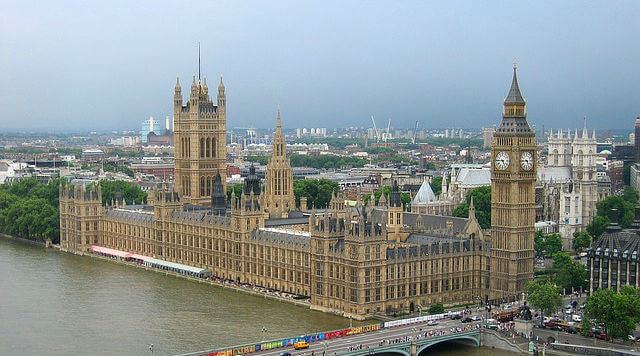

LES MAGNIFIQUES ENDROITS
Le palais de Westminster
Le palais de Westminster fut la résidence principale des rois d’Angleterre jusqu’à la fin de l’ère médiévale. Beaucoup d’institutions publiques y virent le jour, en même temps qu’évoluait la nature du régime. L’ancêtre du Parlement anglais, par exemple, le Curia Regis (« Conseil royal »), se réunissait à Westminster Hall, sauf lorsqu’il devait suivre le roi dans un autre palais. Quant au Parlement modèle (Model Parliament), le premier parlement officiel d’Angleterre, il fut convoqué au palais par Édouard Ier en 12951. Depuis lors, le palais a abrité, sauf à de rares exceptions, toutes les sessions parlementaires.
Westminster est resté la résidence londonienne principale des rois anglais jusqu’à ce qu’un incendie détruise une partie du bâtiment en 1512. En 1534, le roi Henri VIII s’arrogea le palais de York au détriment de son ancien propriétaire, le cardinal Thomas Wolsey2, un puissant ministre tombé en disgrâce. Henri rebaptisa l’endroit en palais de Whitehall, et l’utilisa par la suite comme résidence principale. Bien que Westminster reste officiellement un palais royal, il fut dès lors utilisé en tant que siège des deux chambres parlementaires et en tant que tribunal.
L'ancien palais de Westminster, par Thomas Malton le Jeune (1748 – 1804).
Étant donné son passé de résidence royale, le palais de Westminster ne contenait aucune salle ayant vocation à accueillir les deux chambres : les cérémonies officielles telles que la cérémonie d’ouverture du Parlement se tenaient ainsi dans la Chambre peinte (en) (Painted Chamber), et la Chambre des lords se réunissait dans la Chambre blanche (en) (White Chamber). Quant à la Chambre des communes, elle ne disposait d’aucune salle propre, ce qui la contraignait parfois à tenir ses débats à l’abbaye de Westminster, dans la salle capitulaire ou le réfectoire. Les Communes n’obtinrent un toit permanent que sous le successeur d’Henri VIII, Édouard VI, lorsqu’on leur concéda l’usage de l’ancienne chapelle royale de Saint-Étienne (en). Le Chantries Act de 1547, passé dans le cadre de la Réforme protestante, avait en effet procédé à la dissolution de nombreux ordres religieux tels que celui des chanoines de Saint-Étienne, ce qui permit aux Communes de trouver à se loger. Des aménagements furent ensuite réalisés dans l’ancienne chapelle pour satisfaire aux besoins de la chambre basse.

tower bridge
Le Tower Bridge (en français : « pont de la Tour ») est un pont basculant britannique, situé à Londres et permettant notamment le passage de la Tamise aux véhicules motorisés. Il appartient à la classe des ponts suspendus et est composé de granite pour sa façade, d'acier pour sa structure et de béton pour ses fondations. Il est situé entre les boroughs de Southwark et de Tower Hamlets, près de la tour de Londres dont il tire son nom. Il est l'un des quatre ponts gérés par les services du lord-maire. Le Tower Bridge est situé dans la Pool of London, marquant la limite entre l'Upper Pool en amont et la Lower Pool en aval.
Au moment de sa construction, le Tower Bridge est le plus grand (246 mètres de longueur et 65 mètres de hauteur) et le plus sophistiqué des ponts basculants jamais construits. Le pont est célèbre dans le monde entier grâce à son architecture très particulière, de style néogothique. Il est composé de deux grandes tours, d'une suspension rigide, d'un tablier s'ouvrant au passage des navires les plus hauts et, au sommet, de deux passerelles piétonnes parallèles. Les machineries du pont ouvrant sont ouvertes au public depuis 1982 sous forme de musée présentant le fonctionnement du mécanisme hydraulique qui permet depuis 1894 (date de la construction du pont par Sir John Wolfe-Barry et Horace Jones) de soulever le pont à bascule
bus rouge
Le bus est, à Londres, un des moyens de transport en commun de la ville avec le métro, le train, le DLR et le tramway.
Les bus londoniens doivent notamment leur célébrité aux fameux bus à impériale de couleur rouge.
big Ben
Big Ben est le surnom de la grande cloche de 13,5 tonnes se trouvant au sommet de la tour Élisabeth, la tour horloge du Palais de Westminster, qui est le siège du parlement britannique, à Londres. La tour a été renommée à l'occasion du jubilé de diamant d'Élisabeth II en 2012.